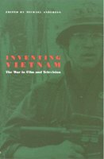

<body bgcolor="#FFFFFF" text="#000000" link="#0000FF" vlink="#CC0000" alink="#CC0000"><center><hr width="350" size="1" align="center" noshade>Testimony of the unique relationship between the U.S.-Vietnam War and the images and sounds that have been employed to represent it<hr width="350" size="1" align="center" noshade><p><a href="https://cdcshoppingcart.uchicago.edu/Cart/ChicagoBook.aspx?ISBN=9780877228615&&PRESS=temple" target="_top">Buy this book!</a> | <a href="https://cdcshoppingcart.uchicago.edu/Cart/Cart.aspx?PRESS=temple" target="_top">View Cart</a> | <a href="https://cdcshoppingcart.uchicago.edu/Cart/Cart.aspx?PRESS=temple" target="_top">Check Out</a></p><p></p></center><!--none//--><h1>Inventing Vietnam</h1>
<H2>The War in Film and Television</H2>
<h3>edited by Michael Anderegg</h3>
<P>cloth 0-87722-861-2 $79.50, Dec 91, <FONT COLOR=#990033>Out of Stock Unavailable</FONT>
<br>paper 0-87722-862-0 $35.95, Dec 91, <FONT COLOR=#990033>Available</FONT>
<br>Electronic Book 1-43990-107-4 $35.95 <FONT COLOR=#990033>Out of Stock Unavailable</FONT>
<BR> 295 pp
5.5x8.25
</P><P>The Vietnam War has been depicted by every available medium, each presenting a message, an agenda, of what the filmmakers and producers choose to project about America's involvement in Southeast Asia. This collection of essays, most of which are previously unpublished, analyzes the themes, modes, and stylistic strategies seen in a broad range of films and television programs.
<P>From diverse perspectives, the contributors comprehensively examine early documentary and fiction films, postwar films of the 1970s such as <I>The Deer Hunter</I> and <I>Apocalypse Now</I>, and the reformulated postwar films of the 1980s&#151<I>Platoon</I>, <I>Full Metal Jacket</I>, and <I>Born on the Fourth of July</I>. They also address made-for-television movies and serial dramas like <I>China Beach</I> and <I>Tour of Duty</I>. The authors show how the earliest film responses to America's involvement in Vietnam employ myth and metaphor and are at times unable to escape glamorized Hollywood. Later films strive to portray a more realistic Vietnam experience, often creating images that are an attempt to memorialize or to manufacture different kinds of myths. As they consider direct and indirect representations of the war, the contributors also examine the power or powerlessness of individual soldiers, the racial views presented, and inscriptions of gender roles. Also included in this volume is a chapter that discusses teaching Vietnam films and helping students discern and understand film rhetoric, what the movies say, and who they chose to communicate those messages.
<BR>&nbsp;<h2>Excerpt</h2><P>Excerpt available at <a href="http://www.temple.edu/tempress">www.temple.edu/tempress</a></p>
<BR>&nbsp;<h2>Contents</h2><P>
<p>Acknowledgments
<br>Introduction &#150 Michael Anderegg
<br>1. Hollywood and Vietnam: John Wayne and Jane Fonda as Discourse &#150 Michael Anderegg
<br>2. "All the Animals Come Out at Night": Vietnam Meets <I>Noir</I> in <I>Taxi Driver</I> &#150 Cynthia J. Fuchs
<br>3. Vietnam and the Hollywood Genre Film: Inversions of American Mythology in <I>The Deer Hunter</I> and <I>Apocalypse Now</I> &#150 John Hellmann
<br>4. "Charlie Don't Surf": Race and Culture in the Vietnam War Films &#150 David Desser
<br>5. Finding a Language for Vietnam in the Action-Adventure Genre &#150 Ellen Draper
<br>6. Narrative Patterns and Mythic Trajectories in Mid-1980s Vietnam Movies &#150 Tony Williams
<br>7. Rambo's Vietnam and Kennedy's New Frontier &#150 John Hellmann
<br>8. <I>Gardens of Stone</I>, <I>Platoon</I>, and <I>Hamburger Hill</I>: Ritual and Remembrance &#150 Judy Lee Kinney
<br>9. Primetime Television's Tour of Duty &#150 Daniel Miller
<br>10. Women Next Door to War: <I>China Beach</I> &#150 Carolyn Reed Vartanian
<br>11. Male Bonding, Hollywood Orientalism, and the Repression of the Feminine in Kubrick's <I>Full Metal Jacket</I> &#150 Susan White
<br>12. Vietnam, Chaos, and the Dark Art of Improvisation &#150 Owen W. Gilman, Jr.
<br>13. Witness to War: Oliver Stone, Ron Kovic, and <I>Born on the Fourth of July</I> &#150 Thomas Doherty
<br>14. Teaching Vietnam: The Politics of Documentary &#150 Thomas J. Slater
<br>Selected Bibliography
<br>Selected Filmography and Videography
<br>The Contributors
<br>Index
</P><BR>&nbsp;<H2>About the Author(s)</H2>
<P><B>Michael Anderegg</B></A> is Professor of English at the University of North Dakota, and author of two other books: <I>William Wyler</I> and <I>David Lean</I>.</P>
<P>Contributors: Cynthia J. Fuchs, John Hellman, David Desser, Ellen Draper, Tony Williams, Judy Lee Kinney, Daniel Miller, Carolyn Reed Vartanian, Susan White, Owen W. Gilman, Jr., Thomas Doherty, Thomas J. Slater, and the editor.</P>
<BR><H2>Subject Categories</H2>
<p><A HREF="/tempress/general.html" TARGET="_top">General Interest</a>
<BR><A HREF="/tempress/cinema.html" TARGET="_top">Cinema Studies</a>
</p>
<BR><h2 class="inpageheading">In the series</H2>
<P><I><a href="http://www.temple.edu/tempress/culture.html" onMouseOver="window.status='Click for other books in this series!'; return true;" onMouseOut="window.status=''; return true;" target="_top">Culture and the Moving Image</a></i>, edited by Robert Sklar.
</p><p>The <I>Culture and the Moving Image</I> series, edited by Robert Sklar, seeks to publish innovative scholarship and criticism on cinema, television, and the culture of the moving image. The series will emphasize works that view these media in their broad cultural and social frameworks. Its themes will include a global perspective on the world-wide production of images; the links between film, television, and video art; a concern with issues of race, class, and gender; and an engagement with the growing convergence of history and theory in moving image studies.</p>
<p align="center"><a href="https://cdcshoppingcart.uchicago.edu/Cart/ChicagoBook.aspx?ISBN=9780877228615&&PRESS=temple" target="_top">Buy this book!</a> | <a href="https://cdcshoppingcart.uchicago.edu/Cart/Cart.aspx?PRESS=temple" target="_top">View Cart</a> | <a href="https://cdcshoppingcart.uchicago.edu/Cart/Cart.aspx?PRESS=temple" target="_top">Check Out</a></p><p><font face="Arial" size="1"><a href="copyright.html" onMouseOver="window.status='Web Copyright Policy';return true;" onMouseOut="window.status=''" title="Web Copyright Policy">&copy;</a> 2015 <a href="http://www.temple.edu" target="new" onMouseOver="window.status='Link to Temple University home page';return true;" onMouseOut="window.status=''" title="Link to Temple University home page">Temple University</a>. All Rights Reserved. http://www.temple.edu/tempress/titles/809_reg.html</font></p>